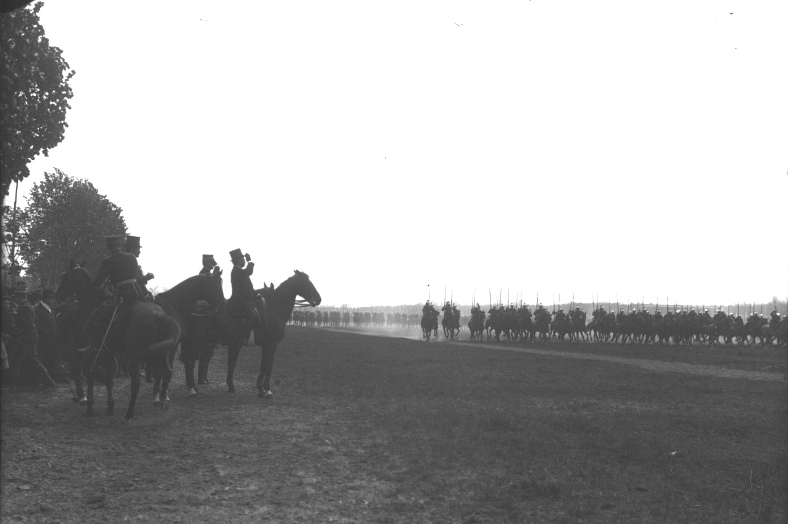
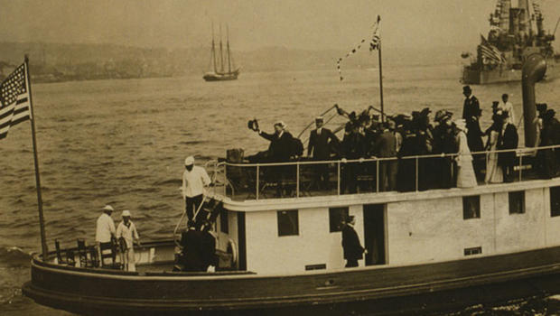

The news film
The newsreel did not begin in 1910 but it is the year in which it really took root. Topicalities
(actualités in French) had always been a very important part of film-making. To relay news
in the form of moving pictures was simply part of what cinema did (and would continue to do right up
until the 1960s when this particular job had very largely been taken over by television. It was throughout
that period a popular and greatly valued service and countless fiction films also bear witness to its
importance.
There is plenty of evidence to show that, from the very beginning, the makers of films thought of
topicalities in "series" or as part of a programme, rarely as individual stand-alone one-minute films
(as was often the case with "composed views" and "fiction films"). When they were in a position to do
so, when, that is to say, Pathé and its principal rival Gaumont had gained a large degree of control
over distribution and exhibition of films, the newsreel (the programme of topicalities) was a perfectly
natural development. The Pathé-Journal had started life in 1908 and Gaumont (Gaumont-Actualités) and
the other major French companies soon followed suit.
With the creation of Pathé subsidiaries abroad, the newsreel was among the first major import so that
Pathé News came both to Britain and to the United States in 1910. The US was slow to take to the newsreel
but Britain became its foremost exponent. Even before the full establishment of Pathé in Britain, The
Pathé Animated Gazette had been published there from from time to time and Britain already had a dedicated
newreel cinema, The Daily Bioscope, which opened on 23 May 1909, but from June 1910 the Animated Gazette
appeared regularly every week, watched, as its frontiscard proudly announced, by millions, and from 1912
it would start to appear twice a week and later even thrice weekly. British Pathé would remain a much loved
(and eventually much mocked) institution in Britain until well into the 1960s. It finally ceased to appear
in February 1970.
Film historians and critics still too rarely pay any attention to the newsreel, often regarding it
(quite wrongly) as a purely peripheral aspect of cinema. In re-asserting the importance of such footage,
and examining a little its contents, one realises the complete falsity of the notion that cinema
in some manner "progressed" from a "primitive" form of "cinema of the attractions" to something quite
different. This totally manufactured theory depends very largely on comparing one kind of film in the
early period with completely different kinds of film at the later period (a fairly obvious piece of academic
deceit). When one compares like with like (the early topicalities with the newsreel items), what one
discovers (unsurprisingly) is exactly the opposite. Not only do topicalities continue to concern themselves
with "attractions" (as indeed they do to this day) but the attractions that they concentrate upon remain
remarkably constant.
In fact the institution of newsreels tended if anything to increase the "attractions" element by
comparison with the mini-documentries produced as stand-alone films (see below).
In the very short item on the Coupe de Voiturettes in Boulogne, there is no real report of the race.
The intention of the film is purely to give an impression of speed. In the zoo film, we see the animals
performing tricks and an elephant "shooting the chutes". We are back in other words with the sort of
film made by the US companies in 1896-1897, featuring show stars and attraction parks before the Lumières'
rather more austere and artistic approach to the photographic composition of films.
This "attraction" effect is nothing peculiar to cinema. The visual presentation of news has always tended to
represent such a trivialisation; it still does to this day. The same tendencies are apparent in photo-journalism
and in television news-reporting. It is, however, questionable whether in the age of the sensational or "yellow"
press (The Yellow Kid, the cartoon from which the soubriquet derives, and "fake news" date, like the cinema
itself, from the 1890s), the cinema and the television have proved very much worse than the written press in this
regard. And there is a strong link between the sensational press and the newsreel. When the form did take hold,
a little later, in the US, it was the press baron William Randolph Hearst who completely dominated the field with
Hearst Newsreel in 1914, International Newsreel in 1919, MGM News in 1929 and finally Hearst Metrotone News which
survived until 1967.
Although ostensibly the newsreels published what in French are called actualités and were known in English
at the time as "topicalities", their news-reporting, like that of the yellow press, was in practice rather thin
and the requirement to produce a constant stream of material at relatively low cost meant that they were full
of "magazine" items that are often more in the nature of (hastily) composed views rather than genuine topicalities,
Since British Pathé has very properly made a wealth of material from its archives publicly available,
we are in a position to make the comparison. These are a range of newsreel items from 1910 and below
a comparison between their content and that of the very first topicalities and composed views from 1896-1897.
Links here direct to British Pathé films available to all on youtube. For those interested,
British Pathé offers a great deal more on its own web site -
https://www.britishpathe.com/.

The mysterious absence of Roosevelt from the film is almost certainly because it actualy has nothing to do with his visit at all but is a piece of footage that has simply been dug up and re-used for the occasion. The use of stock footage in this way with added political commentary was becoming more common,
It is not the critic who counts; not the man who points out how the strong man stumbles, or where the doer of deeds could have done them better. The credit belongs to the man who is actually in the arena, whose face is marred by dust and sweat and blood; who strives valiantly; who errs, who comes short again and again, because there is no effort without error and shortcoming; but who does actually strive to do the deeds; who knows great enthusiasms, the great devotions; who spends himself in a worthy cause; who at the best knows in the end the triumph of high achievement, and who at the worst, if he fails, at least fails while daring greatly, so that his place shall never be with those cold and timid souls who neither know victory nor defeat.
|  |
|---|
The manly life was not altogether to be forgotten, however, and on 27 April, he attended a military review at Vincennes, not a million miles from where Charles Pathé had his factory and it was a Pathé operator who made the film below, perhaps the most attractive to have been made in connection with the Roosevelt tour. It has something of the curious atmospheric quality one finds
Roosevelt had, controversially, been awarded the Nobel Peace prize in 1906, ostensibly for his role in negotiating peace in the Russo-Japanese war of 1904-1905. The peace prize, unlike the other Nobels, was awarded, at Nobel's specific request, by the Norwegian rather than the Swedish Committee. Previous peace prizes (1901-1904) had been awarded to peace-activists. The award of the prize to Roosevelt in the same year in which he had talked of wielding "the big stick" in international affairs, was the beginning of a political manipulation of the award that has continued ever since. Norway had dissolved its union with Sweden in 1909 and Swedish newspapers accused the Nobel committee of using the award to win powerful friends rather than to promote the cause of peace in the world as Nobel had intended. Roosevelt's visit to Norway and Denmark, at he beginning of his 1910 European tour was in part to formally accept the prize and the acceptance speech was made in Oslo on 5 May 1910.
In his speech Roosevelt typically rejected pacifism, which he characterised as cowardice and voluptuousness and extolled the "stern and virile virtues" necessary to the existence of a state. On the other hand he supported, as he had always done, the Permanent Court of Arbitration, established at the Hague in 1899, and even called for the formation of a "League of Peace", although, later, in 1919, one of his last public acts would be to vote against US ratification of the League of Nations.The first part of the film below (of unknown provenance and probably in fact a later compilation of footage) shows Roosevelt at the National Theatre in Oslo where his acceptance speech was made. The second part shows his earlier visit to Denmark (2-3 May), his arrival in Copenhagen and visits to the castles of Frederiksborg and Kronborg, where, alas, there is no sign of the ghost of Hamlet Sr.
In Oslo, the film-camera captures a man with an early Brownie box-camera photographing Roosevelt's ceremonial coach, a reminder that such events were major tourist-attractions. "People gathered at railway stations, in school-houses, and in the village streets," one US journalist observed. "They showered his carriage with flowers, thronged windows of tenement houses, and greeted him with 'Viva, viva, viva Roosevelt!'" The celebrity, as we see, had become adept at the art of hat-tipping to the crowd. The steamer on which he travels from Kronberg back to Copenhagen is The Queen Maud, not the famous polar ship of that name but a cargo ship built in Glasgow in 1909, which passes a Danish naval ship, The Kronborg Castle. More Brownies are in evidence at Copenhagen but this time in the hands of press-photographers.
"My political career is ended," Roosevelt had told a journalist in Khartoum. "No man in American public life has ever reached the crest of the wave as I appear to have done without the waves breaking and engulfing him." The general success of his tour, followed by a triumphant welcome home on 18 June 1910, effectively put paid to his pessimism. Doris Kearns Goodwin, in what is admittedly an extremely hagiograhic account, The Bully Pulpit: Theodore Roosevelt, William Howard Taft, and the Golden Age of Journalism, describes the preparations in New York for his return:
In the week preceding his arrival in America, tens of thousands of visitors from all over the country had descended upon New York, lending the city's hotels and streets "a holiday appearance." Inbound trains carried a cast of characters "as diversely typical of the American people as Mr. Roosevelt himself...conservationists and cowboys, capitalists and socialists, insurgents and regulars, churchmen and sportsmen, native born and aliens." More than two hundred vessels, including five destroyers, six revenue cutters, and dozens of excursion steamboats, tugs, and ferryboats, all decked with colorful flags and pennants, had sailed into the harbor to take part in an extravagant naval display.
An army of construction workers labored to complete the speaker's plat-form and grandstand seating at Battery Park, where Roosevelt would address an overflow crowd of invited guests. Businesses had given their workers a half-holiday so they could join in the festivities. "Flags floated everywhere," an Ohio newspaper reported; "pictures of Roosevelt were hung in thousands of windows and along the line of march, buildings were draped with bunting."
The night before the big day, a dragnet was set to arrest known pickpockets. Five thousand police and dozens of surgeons and nurses were called in for special duty. "The United States of America at the present moment simulates quite the attitude of the small boy who can't go to sleep Christmas Eve for thinking of the next day," the Atlanta Constitution suggested. "And the colonel, returning as rapidly as a lusty steamship can plow the waves, is the 'next day.' It is a remarkable tribute to the man's personality that virtually every element of citizenship in the country should be more or less on tiptoes in the excitement of anticipation."
|  |
|---|
Stearns' purple prose may be a trifle hard to stomach but the films broadly bear out her account and there can be no question of the star-appeal of the portly President. Photographers and cameramen are absolutely everywhere. As Stearns points it in one of her more sick-making flourishes, describing Roosevelt on the tug, coming into harbour, the good old boy still had all his teeth:
To each familiar face, he nodded his head and smiled broadly, displaying his famous teeth, which appeared "just as prominent and just as white and perfect as when he went away." Then, recognizing the photographers' need to snap his picture, he stopped his hectic motions and stood perfectly still.
When it comes to describing the ceremony at Battery Park, Stearns verges on the orgasmic.
Straightaway, Roosevelt headed from the pier to the speaker's platform. He was in the midst of shaking hands with cabinet members, senators and congressmen, governors and mayors when his daughter Alice cried, "Turn around, father, and look at the crowd." Outspread before him was "one vast expanse of human countenances, all upturned to him, all waiting for him." Beyond the 600 seated guests, 3,500 people stood within the roped enclosure, and beyond them "unnumbered thousands" on the plaza. Still more crammed together on the surrounding streets. It was estimated that at least 100,000 people had come to Battery Park, undeterred by the crushing throngs and the oppressive heat and humidity. From a ninth-floor window of the nearby Washington Building, "a life-size Teddy bear" belted with a green sash was suspended. A large white banner bearing Roosevelt's favorite word, "Delighted," was displayed on the Whitehall Building, where "from street level to skyline every window was open and every sill held as many stenographers and office boys and bosses as the sills could accommodate."